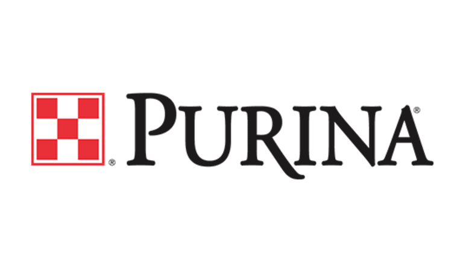
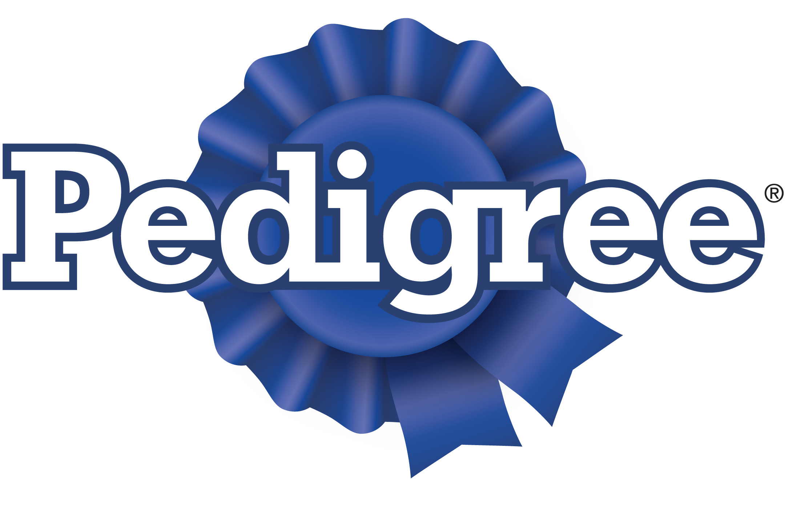
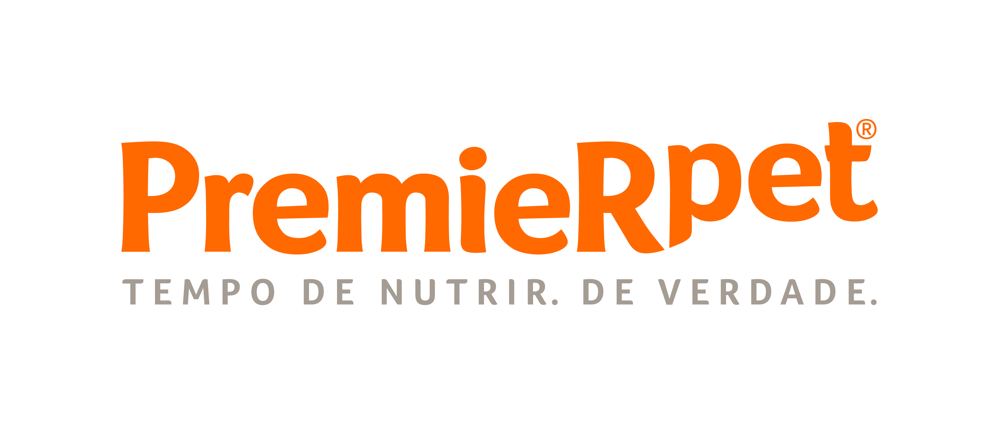
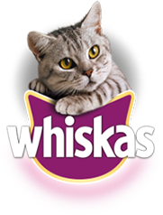

Dogers

Só quem é apaixonado por bichos de estimação sabe que a relação de amor e lealdade que eles proporcionam. Por essa razão, nossos tutores não medem esforços para oferecer o que há de melhor! Na Dogers você encontra tudo para trazer mais alegria e qualidade de vida para dos seus bichinhos.
Dogers recomenda
Melhores rações:


Melhores marcas:




Você sabia que é possível adotar um bichinho pela Prefeitura do Estado de São Paulo e transformar sua vida e a de um desses animais? Clique aqui para mudar a sua história.